כל צילומי ה"לפני" הם מהענף הראשי של המאגר, ולא מאיטרציות קודמות בענף ה-UX. מימין: המצב הקיים. משמאל: ההצעה הנוכחית. כל הצילומים והסרטונים נלקחו מהאפליקציה האמיתית באמולטור Android.
ענף ביקורת מתמשך. ה-PR נשאר בטיוטה. אין למזג או להפעיל מיזוג אוטומטי בלי הוראה מפורשת מדורד.
ב-master הכניסה היא ישירות לפסוקי הפרק. בהצעה החדשה נכנסים לבית עם כרטיס הפרק היומי הכהה, כותרת גדולה וכפתור כחול. כל יעדי הלימוד והקשר נמצאים בהמשך אותו דף.
לפני - הענף הראשי
הכניסה הקיימת: ישירות לקורא
אחרי - הצעת UX
הבית החדש עם כרטיס הפרק היומי
02
מגלים עוד - בלי רשימת קישורים קטנים
הבית מערבב אריחים ברוחב מלא עם זוגות אריחים קטנים. הפרק היומי, הפרשות והמועדים מקבלים מקום מרכזי; יתר היעדים נפתחים ישירות מאריח בודד. זוגות האריחים מחליפים צדדים: לבן וכחול, ואז כחול ולבן אחרי הכרטיס הרחב.
לפני - הענף הראשי
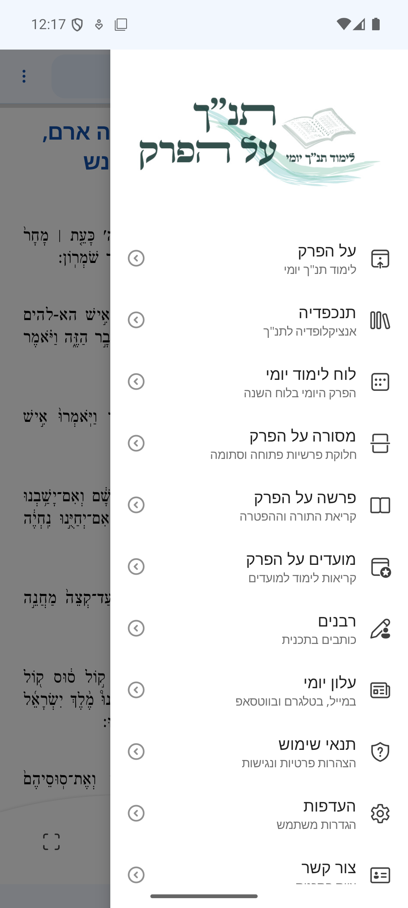
מגירת הניווט ב-master
אחרי - הצעת UX
הכניסות בהמשך הבית
03
ניווט, פירושים ומאמרי הפרק
ניווט בתנ"ך פותח בחירת ספר ופרק ונשאר קבוע גם במאמרים. בחירת פירושים קובעת מה יוצג לצד הפסוקים. מאמרי הפרק מתחלף לחזרה לפרק באותו מקום. מעטפת הסרגל לבנה, עם קווי מתאר דקים במקום שכבות של מילוי כחול. הצל שמתחת לסרגל הוסר; שכבת הניווט נשמרת מעל הטקסט.
לפני - הענף הראשי
הקורא ופס האייקונים הקיים
אחרי - הצעת UX
ניווט קבוע והחלפת פעולה באותו כפתור
04
ניווט בתנ"ך מתוך הסרגל
אותו בורר ספר ופרק נפתח מכפתור ניווט בתנ"ך. הכפתור נשאר קבוע גם כשמוצגים מאמרי הפרק. גם כותרת בורר הפרק לבנה. בחר הוא פעולה ראשית בכחול מלא, ובטל הוא פעולה משנית לבנה.
לפני - הענף הראשי
הניווט דרך כותרת הפרק ב-master
אחרי - הצעת UX
בחירת ספר ופרק מתוך הסרגל
05
גלילה - אזור הקריאה נשאר יציב
בכניסה שני הסרגלים גלויים. כל גרירה משאירה אותם גלויים או מחזירה אותם מיד. אחרי סיום הגרירה ו-1.8 שניות ללא פעילות, העליון מחליק למעלה והתחתון דועך. אזור הקריאה שומר על גודל קבוע.
לפני - הענף הראשי
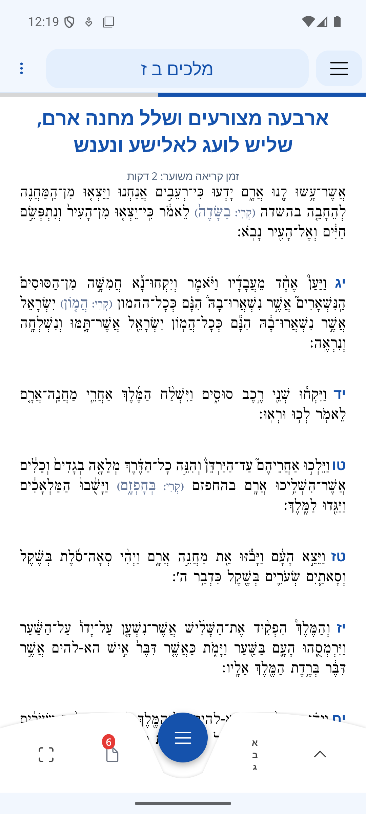
הקורא הקיים אחרי גלילה
אחרי - הצעת UX
הגלילה בהצעת ה-UX
06
אפשרויות הקריאה - גיליון נוח ללחיצה
שניים מקרא, תיקון קוראים והסתרת שם השם מוצגים בגיליון בגודל התוכן. חיפוש פותח את החיפוש הקיים. אין כפתור מסך מלא: הסרגלים נעלמים אוטומטית אחרי גרירה והשהיה.
לפני - הענף הראשי
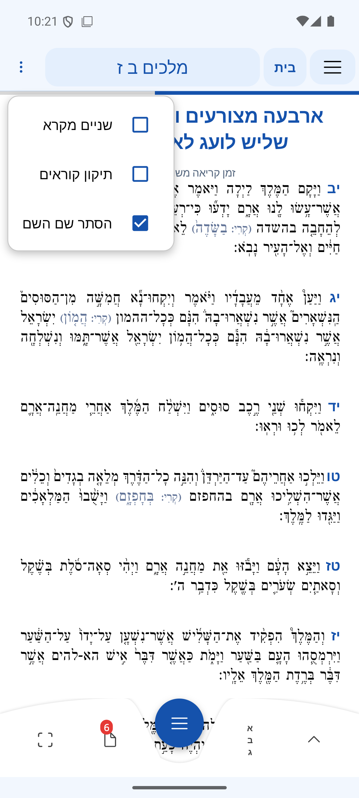
התפריט הקטן ב-master
אחרי - הצעת UX
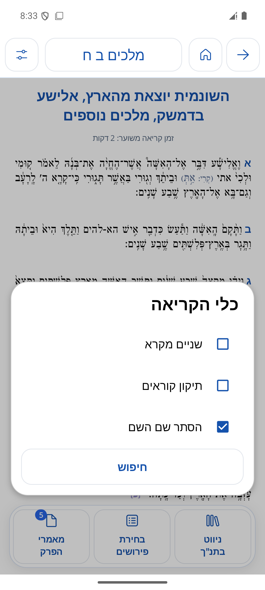
גיליון האפשרויות החדש
07
גודל הגופן ותצוגת הטקסט נמצאים בהעדפות
מסך העדפות התצוגה ממשיך לשנות את הגופן והתצוגה. הכפתור בסרגל הקורא הוחלף לניווט בתנ"ך. רקע הסרגל והכפתורים לבן. כפתורי איפוס משניים לבנים, עם אותו רדיוס וקו מתאר כמו יתר הכפתורים.
לפני - הענף הראשי
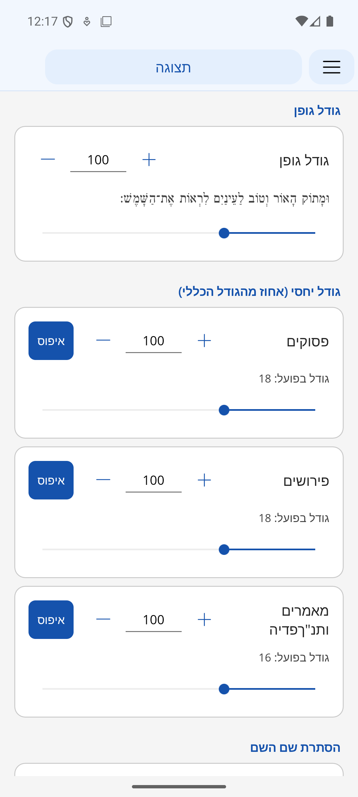
העדפות התצוגה ב-master
אחרי - הצעת UX
העדפות התצוגה של האפליקציה
08
חלונית הפירושים מכסה את הסרגל
החלונית נמצאת לפני הסרגל התחתון בציר Z, ומכסה אותו חזותית ובמגע. היא מתחילה בתחתית המסך, ללא רווח שמור לסרגל.
לפני - הענף הראשי
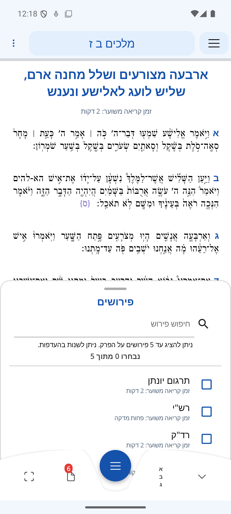
גיליון הפירושים הקיים
אחרי - הצעת UX
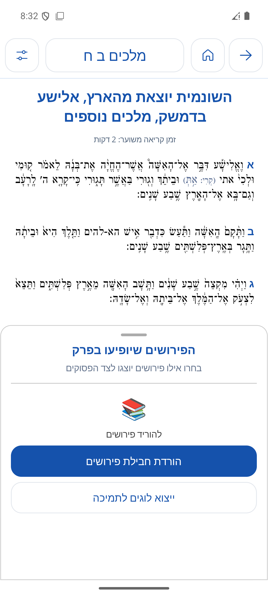
הפירושים מכסים את הסרגל התחתון
09
מאמרי הפרק - תוכן נוסף עם דרך חזרה ברורה
במצב מאמרים, כפתור מאמרי הפרק עצמו מתחלף לחזרה לפרק. ניווט בתנ"ך נשאר באותו מקום וממשיך לפתוח את בורר הניווט.
לפני - הענף הראשי
מאמרי הפרק ב-master
אחרי - הצעת UX
חזרה לפרק באותו כפתור של מאמרי הפרק
10
פרשה על הפרק - אריח רחב בבית
פרשות התורה מקבלות אריח ברוחב מלא, עם כותרת גדולה, ספר פתוח ברקע וכפתור כחול. מעליו ומתחתיו משולבים זוגות אריחים קטנים.
לפני - הענף הראשי
פרשות התורה דרך המגירה ב-master
אחרי - הצעת UX
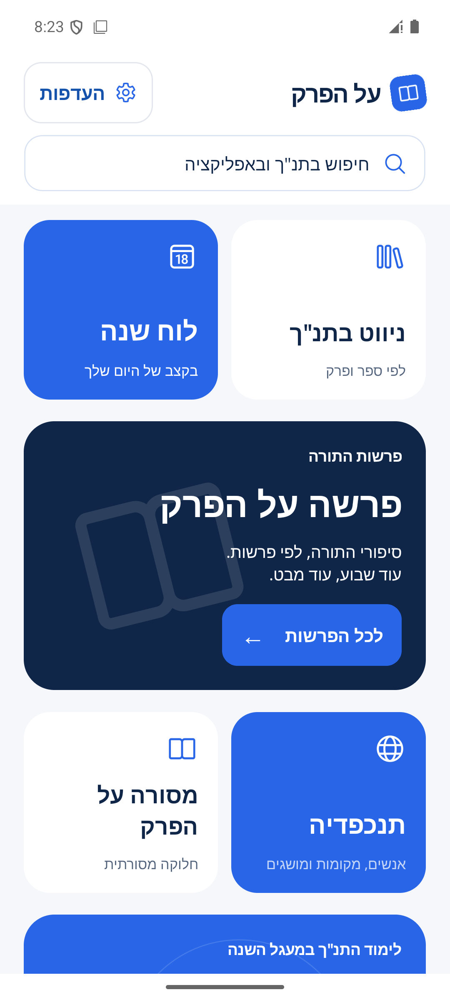
אריח פרשות ברוחב מלא בתוך הבית
11
לימוד התנ"ך במעגל השנה
אריח המועדים בכחול בהיר, עם קריאות החגים ומועדים, מקורותיהם בתנ"ך ומאמרים. האריחים בבית משלבים לבן ושני גווני כחול: כחול עמוק וכחול בהיר. סמל לוח השנה מציג ט"ו.
לפני - הענף הראשי
מועדים דרך המגירה ב-master
אחרי - הצעת UX
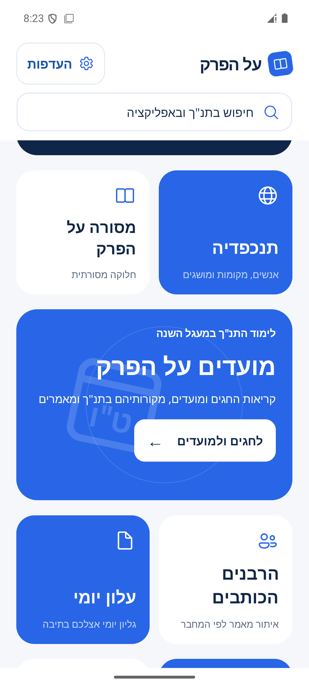
אריח מועדים רחב בין זוגות האריחים
12
יצירת קשר ותרומות - קרוב לתוכן
הרבנים הכותבים מאפשר איתור מאמר לפי המחבר; העלון מציע גליון יומי אצלכם בתיבה. תרומות מוגדרות כתמיכה בתוכנית. תנאי שימוש ופרטיות מוצגים באריח קטן לצד יתר הכניסות.
לפני - הענף הראשי
קשר ותמיכה דרך המגירה ב-master
אחרי - הצעת UX
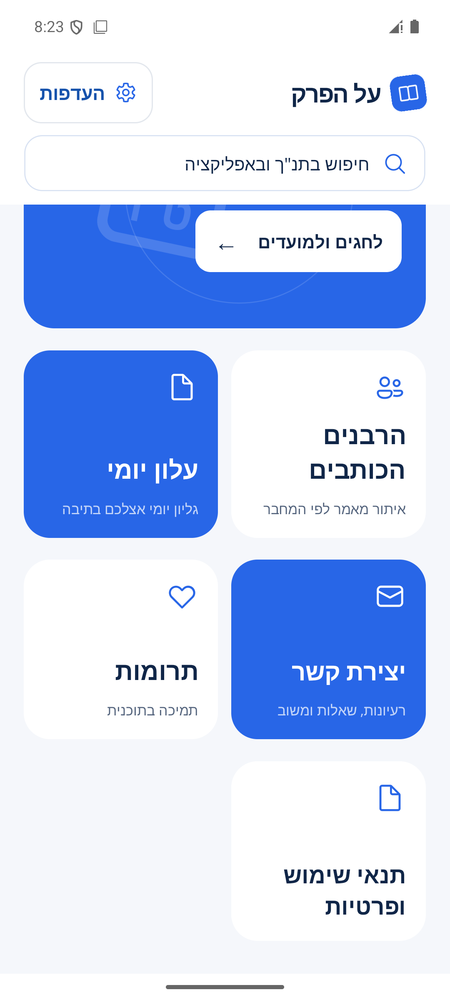
הניסוחים המעודכנים ואריח קטן לתנאי השימוש
13
חיפוש בתוכן וגם ביעדי האפליקציה
זהו החיפוש הקיים של האפליקציה, עם אותם סינון, מיון ותוצאות. מסכים נמצאים בו כסוג תוצאה נוסף, ללא רשימת ניווט נפרדת. הכניסה מהבית ומכלי הקריאה מובילה לאותו רכיב חיפוש.
לפני - הענף הראשי
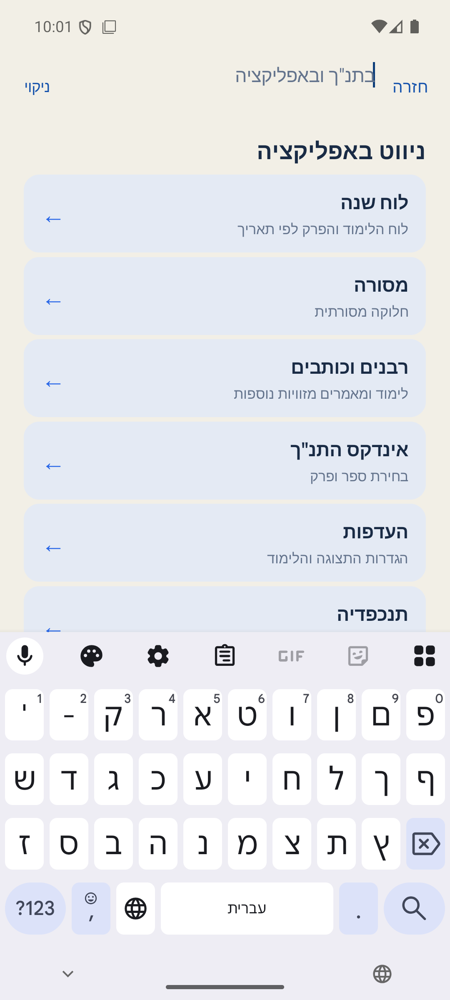
החיפוש בקורא הקיים
אחרי - הצעת UX
החיפוש הקיים כולל תוצאות מסוג מסך
14
מה לחפש - גם מסך
מסך נוסף לבורר מה לחפש ומופיע ראשון כדי שיהיה קל לגלות אותו. אפשר לחפש למשל לוח שנה, העדפות או ניווט בתנ"ך באותה רשימת תוצאות שבה מחפשים פסוקים ומאמרים.
לפני - הענף הראשי
החיפוש ובורר מה לחפש ב-master
אחרי - הצעת UX
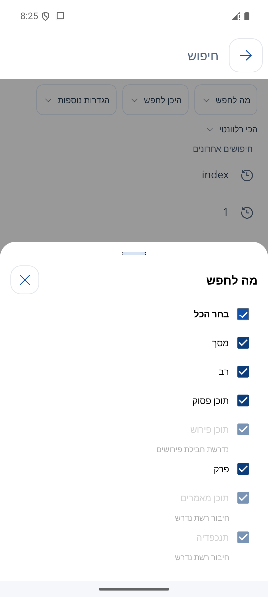
הסוג מסך בבורר הקיים
15
לוח לימוד יומי - כחול על רקע קריר ובהיר
מעטפת בהירה וקרירה עם גובה ורדיוס אחידים לכותרת ולכפתורי הניווט. כפתורי הבית והחזרה גדולים ומופיעים באותם מקומות. רקע הסרגל והכפתורים לבן.
לפני - הענף הראשי
לוח השנה ב-master
אחרי - הצעת UX
לוח השנה עם המעטפת החדשה
16
רבנים וכותבים - חזרה ובית באותה שפה
שדה החיפוש ממלא את כל הרוחב שנשאר לצד בית וחזרה. כפתור ניקוי מוסתר אינו שומר מקום ריק. רקעי הכותרת וכפתורי הסרגל בעלי גובה ורדיוס אחידים. רקע הסרגל והכפתורים לבן.
לפני - הענף הראשי
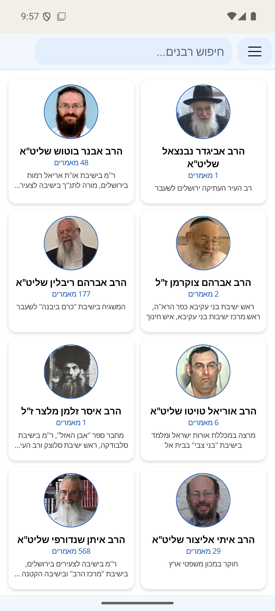
רבנים וכותבים ב-master
אחרי - הצעת UX
המסך בהצעת ה-UX
17
העדפות - כניסה בולטת וחזרה צפויה
בבית יש כפתור העדפות גדול עם אייקון. בתוך ההגדרות נשמר אותו ניווט חזרה ובית, ללא תפריט צד מקביל. רקע הסרגל והכפתורים לבן.
לפני - הענף הראשי
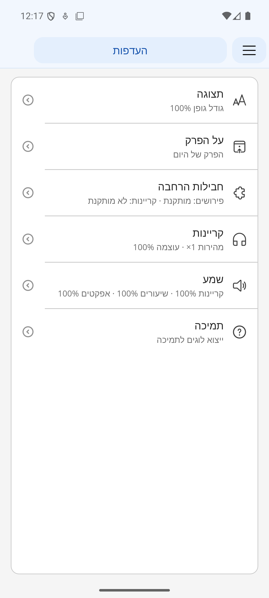
העדפות ב-master
אחרי - הצעת UX
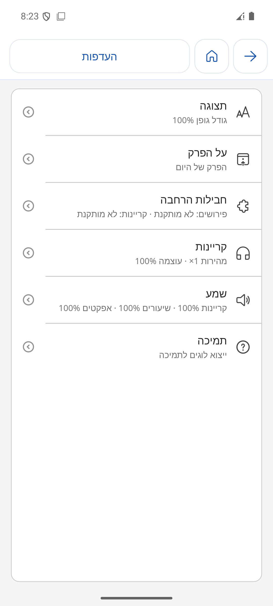
העדפות עם המעטפת החדשה
18
גלילה בתנועה - master מול הצעת ה-UX
הקלטות אמיתיות מהאפליקציה. בהצעה החדשה יש הפסקות בין הגרירות כדי להדגים את ההשהיה, הדעיכה והחזרה.